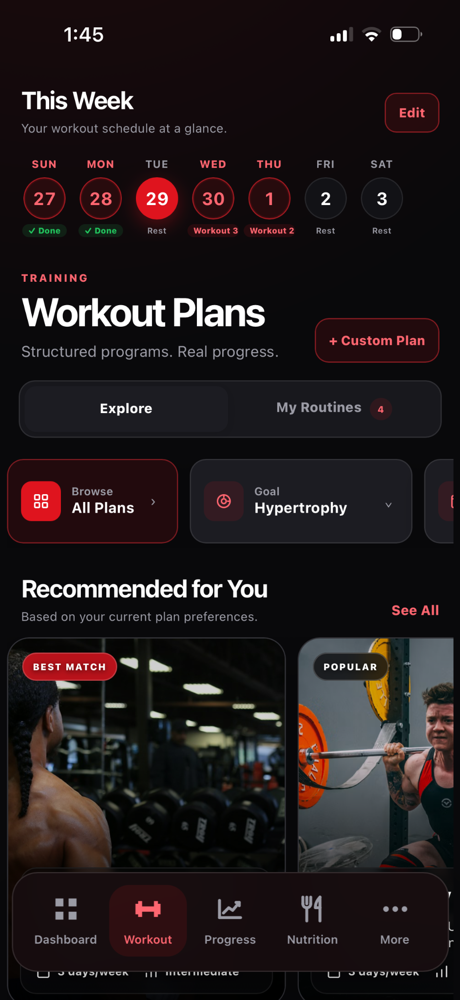
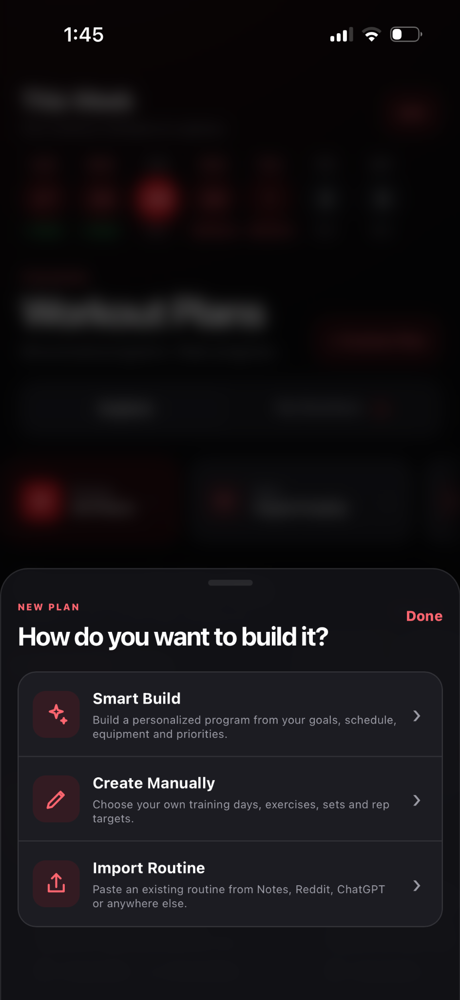

Build and save a workout plan
Choose a library routine, Smart Build, a manual plan or an imported routine.
How to use it
- Open Workout → Workout Plans.
- Browse plans under Explore, or tap + Custom Plan to choose a creation route.
- Choose Smart Build for guided setup, Create Manually for your own days and exercises, or Import Routine to bring in a plan.
- Review days, exercises, sets and rep ranges, then Save Plan.
See it in Level Up


What the evidence means
A plan is a starting point. Adjust volume and exercise choice as performance and recovery become clearer.